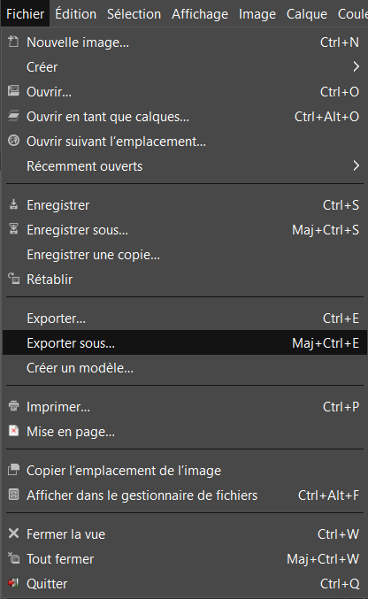
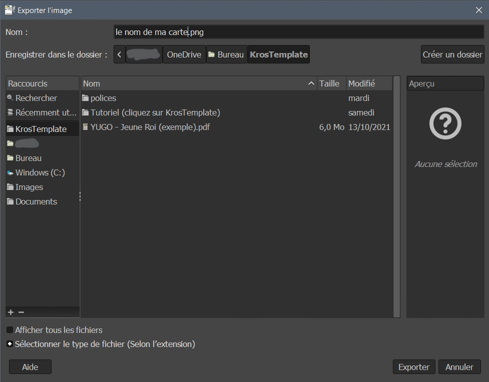
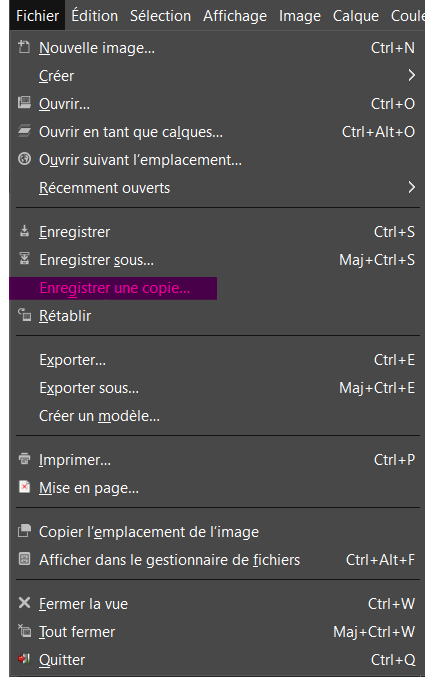

1 - Exporter sa carte sous extension
Pour exporter sa carte, rien de plus facile !

Une fois cliqué, sélectionnez le nom, l'extension et le chemin et le tour est joué !

Quand cette fenêtre s'ouvre, ne touchez à rien et continuez avec "Exporter".

2 - Sauvegarder son projet
Si vous sauvegarder votre carte sous un format png (ou autre) c'est bien mais si vous faites ça, Gimp applatira l'image.
Ce qui fait que, quand vous voudrez la modifier une seconde fois, il n'y aura plus de calque...
Pour éviter ce problème, AVANT de commencer à modifier le template, il faut mieux en créer une copie (en ".xcf").

Nommer-le de la même façon que votre carte, fermez le template original et ouvrez la copie, ainsi, vous ne perdez ni le template ni les calques.